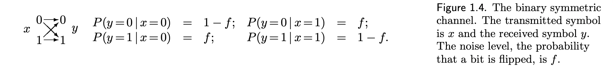
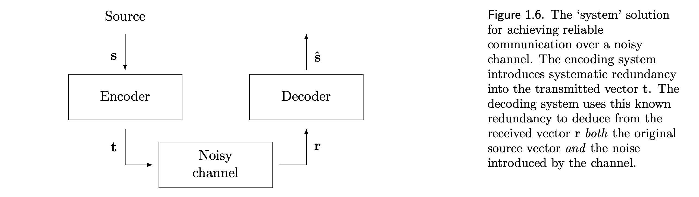
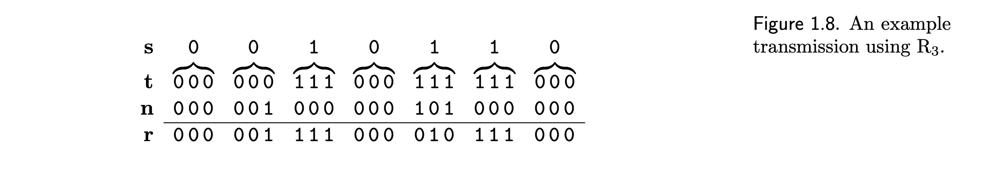
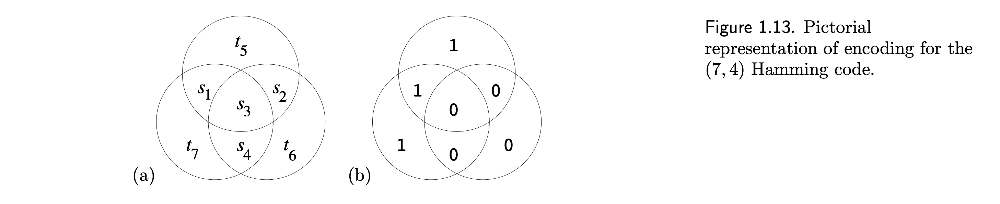

Communication systems—whether through telephone lines, spacecraft signals, biological DNA replication, or data storage devices—often face noise and interference that can distort transmitted information. This noise may arise from physical, environmental, or random factors, causing transmitted data (like bits) to differ from what is received. The goal in designing such systems is to minimize the probability of transmission errors to a level that is practically negligible.
Consider a noisy disk drive that transmits each bit correctly with probability \((1−f)\) and incorrectly with probability \(f\).
f is the probability of guessing incorrectly, meaning if \(f=0.1\) - 10% of bits are flipped, which is very inefficient for large number of bits.
Use the binary simmetric channel:
Binary symmetric channel
Maximum Likelihood
To reduce the error during transmission, we can repeat each bit of our source code, say 3 times (Repetition code \(R_3\))
\(s\) - source, \(t\) - transmitted message, \(n\) - noise, \(r = t+n\) (using modular arithmetic of 2)
The optimal way to decode would be by taking one which has a majority vote (eg. \(011 \Rightarrow 1\)).
Consider decoding a single bit \(s\), encoded as \(t(s)\) and gave rise to \(r\) = \(r_1 r_2 r_3\). By Bayes’ theorem:
\[ P(s|r_1 r_2 r_3) = \dfrac{P(r_1 r_2 r_3 | s)P(s)}{P(r_1 r_2 r_3)} \] \[ \Longrightarrow P(s=1|r_1 r_2 r_3) = \dfrac{P(r_1 r_2 r_3 | s=1)P(s=1)}{P(r_1 r_2 r_3)} \quad \text{; same for s=0}\]
The posterior probability( \(P(s=1|r_1 r_2 r_3)\) ) is determined by:
Since constant \(P(r_1 r_2 r_3)\) is not needed to decode, so \(\hat{s} = 0\) if \(P(s=0|r) > P(s=1|r)\) and \(\hat{s} = 1\) otherwise. We assume that \(P(s=0) = P(s=1) = 0.5\) and noise level \(f<0.5\), so the likelyhood is \[ P(r|s) = P(r|t(s)) = \prod_{n=1}^NP(r_n|t_n(s)) \quad \text{,} \quad N=3\] \[ \Longrightarrow P(r_n|t_n) = \begin{cases} (1-f), & \text{if } r_n=t_n,\\ f, & \text{if } r_n \neq t_n. \end{cases} \]
So, the ratio of likelyhoods is \[ \dfrac{P(r|s=1)}{P(r|s=0)} = \prod_{n=1}^N\dfrac{P(r_n|t_n(1))}{P(r_n|t_n(0))} \text{;} \]
each factor \(\dfrac{P(r_n|t_n(1))}{P(r_n|t_n(0))}\) equals \(\dfrac{(1-f)}{f}\) if \(r_n =1\) and \(\dfrac{f}{1-f}\) if \(r_n = 0\). The ratio \(γ ≡ \dfrac{(1−f)}{f}\) is greater than 1, since \(f < 0.5\), so the winning hypothesis is the one with the most ‘votes’, each vote counting for a factor of \(γ\) in the likelihood ratio.
Using \(R_3\) code, we can reduce the error probability to \(p_b \approx 0.03\) per bit. But while doing that, we increased the rate by three times, meaning we would use three times the original storage. So it’s not efficient storage-wise and it’s not that helpful in reducing error probability
To reduce the error probability and use storage more efficiently, we can use block code.
A block code is a rule for converting a sequence of source bits s, of length K, say, into a transmitted sequence t of length N bits. To add redundancy, we make N greater than K. The extra bits are called parity-check bits. Example of a block code the (7, 4) Hamming code, transmits \(N=7\) bits for evey \(K=4\) source bits.
The first four bits, \(t_1 t_2 t_3 t_4\), are set equal to the four source bits, \(s_1 s_2 s_3 s_4\). Other three are set so that the parity within each circle is even:
Because the Hamming code is a linear code, it can be written compactly in terms of matrices as follows. The transmitted codeword t is obtained from the source sequence s by a linear operation, \[ t= G^T s \text{,}\] where \(G\) is the generator matrix of the code,
\[ G^T = \begin{bmatrix} 1 & 0 & 0 & 0 \\ 0 & 1 & 0 & 0 \\ 0 & 0 & 1 & 0 \\ 0 & 0 & 0 & 1 \\ 1 & 1 & 1 & 0 \\ 0 & 1 & 1 & 1 \\ 1 & 0 & 1 & 1 \end{bmatrix} \]
If we assume that all source vectors equally likely, the decoding process involves finding the most likely transmitted codeword given the received vector. This can be achieved using the syndrome decoding method.
When a received vector \(r\) is obtained, we check if any of the three parity checks are violated:
The three-bit number \(z = (z_1,z_2,z_3)\) is called the syndrome.
If \(z = 000\), no error is detected. Otherwise, the syndrome indicates which bit was likely flipped:
This code can correct any single-bit error and detect all two-bit errors.
The computaion of the syndrome vector is a linear operation. If we define a \(3 \times 4\) matrix \(P\) such that \[ G^T = \begin{bmatrix} I_4 \\ P \end{bmatrix} \]
where \(I_4\) is the \(4 \times 4\) identity matrix, then the syndrome vector is \(z= Hr\) where the parity check matrix is given by \(H = \begin{bmatrix} -P & I_3 \end{bmatrix}\); in modulo-2 (\(-1 \equiv 1\)), so
\[ H = \begin{bmatrix} P & I_3 \end{bmatrix} = \begin{bmatrix} 1 & 1 & 1 & 0 & 1& 0 &0\\ 0&1&1&1&0&1&0 \\ 1&0&1&1&0&0&1 \end{bmatrix} \]
All the codewords \(t=G^T s\) of the code satisfy \[ Ht = \begin{bmatrix} 0\\0\\0 \end{bmatrix} \text{.} \]
In the Hamming code, the probability of block error is the probability that two or more bits are flipped. This probability scales as \(O(f^2)\), as that of repetition code \(R_3\). But the communication rate of Hamming code is $R = 4/7 $.
Shannon’s noisy‑channel coding theorem (1948) shows that for any discrete memoryless channel there exists a number C, the channel capacity, with the following properties: for any transmission rate R < C one can construct codes and decoding rules that make the probability of decoding error arbitrarily small as the block length goes to infinity; conversely, any rate R > C cannot achieve vanishing error probability.
For the binary symmetric channel (flip probability f) the capacity is \[ C \;=\; 1 - H_2(f) \] where \[ H_2(f) \;=\; -f\log_2 f - (1-f)\log_2(1-f) \] is the binary entropy (bits per channel use). Shannon’s original proof used a random‑coding and typical‑set argument and is existence‑based: it guarantees codes achieving rates up to C but does not give an explicit low‑complexity construction.